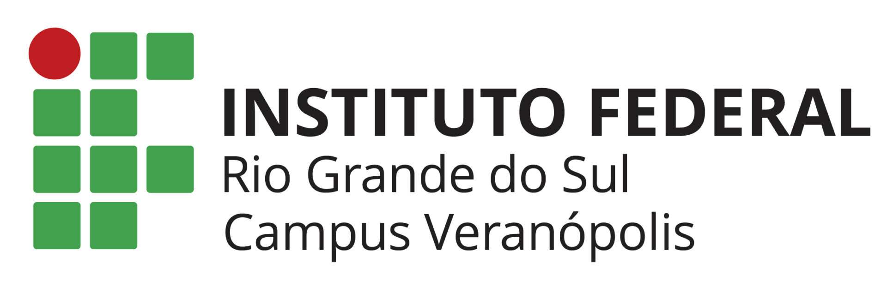

INTRODUÇÃO AO PYTHON
Curso Interativo de Python

Módulo 1: Primeiros Passos e o "Modo Pensar"
Seja muito bem-vindo! Pense no código como uma sequência de instruções que ensina o computador a resolver problemas passo a passo. O computador apenas lê linha por linha e executa exatamente o que você mandou.
Por que Python?
- Sintaxe Limpa: O código parece inglês fluente. É feito para humanos lerem sem esforço.
- Superpoderes de Mercado: Python é uma das linguagens mais utilizadas no mundo em áreas como Inteligência Artificial, automação, análise de dados e Internet das Coisas (IoT).
Conceitos Fundamentais
O comando básico para mostrar qualquer informação na tela do computador é a função print():
print("Olá, Mundo!")
📦 Entendendo Variáveis (A Metáfora das Gavetas)
Imagine que a memória do computador é um grande armário organizador. Uma variável é simplesmente uma gaveta onde você cola uma etiqueta para saber o que tem dentro. Se você colar a etiqueta nome_do_pet e colocar o texto "Rex" lá dentro, toda vez que o Python ler essa etiqueta, ele saberá exatamente o que está guardado. O Python identifica o tipo de dado sozinho:
- String (str): Texto delimitado por aspas. Ex:
nome = "Rex" - Inteiro (int): Números inteiros sem casas decimais. Ex:
idade = 4 - Float (float): Números com casas decimais (ponto flutuante). Ex:
peso = 12.5
# Criando as gavetas (armazenando dados) nome_do_pet = "Rex" idade = 4 peso = 12.5 # Usando o conteúdo das gavetas print(nome_do_pet) # Vai mostrar: Rex print(idade) # Vai mostrar: 4
📝 Exemplo Prático: Criador de Fichas Automático
O Python permite organizar e juntar textos com variáveis de forma muito simples usando uma estrutura chamada f-string (basta colocar um f antes das aspas e a variável entre chaves {}). Veja como criar uma mensagem automatizada combinando as gavetas que guardamos:
# Combinando variáveis para gerar um relatório automático
relatorio = f"O paciente {nome_do_pet} tem {idade} anos e pesa {peso}kg."
print(relatorio)
# Saída na tela: O paciente Rex tem 4 anos e pesa 12.5kg.
🧮 Operações Matemáticas na Prática
O computador é uma excelente calculadora. Podemos usar os operadores padrão para automatizar contas: + (soma), - (subtração), * (multiplicação) e / (divisão).
# Exemplo: Calculando a dosagem diária de ração baseada no peso do animal
# Regra: 10 gramas de ração para cada quilo do pet
peso_animal = 15
porcao_por_quilo = 10
total_racao_diaria = peso_animal * porcao_por_quilo
print(f"O animal precisa de {total_racao_diaria}g de ração por dia.")
# Saída na tela: O animal precisa de 150g de ração por dia.
⚠️ Atenção ao "Modo de Pensar" do Computador
O Python é extremamente organizado e rigoroso. Se você tentar somar um texto com um número diretamente, ele não vai saber se deve fazer uma conta matemática ou juntar as palavras, gerando um erro de tipo (TypeError) que trava o programa.
# ❌ ISSO VAI GERAR UM ERRO E TRAVAR O CÓDIGO:
print("Idade: " + 4)
# JEITO CORRETO (Usando f-string ou separando por vírgula):
print(f"Idade: {4}")
print("Idade:", 4)
Módulo 2: Tomada de Decisão e Estruturas Condicionais
Até agora, o nosso código executava todas as linhas de cima para baixo. Mas e se o computador precisasse escolher caminhos diferentes baseado em uma situação? É aqui que entram as estruturas condicionais: if (se), elif (senão se) e else (senão).
🚦 O Fluxo de Decisão (A Metáfora do Semáforo)
Pense nas condições como um guarda de trânsito. O código chega a uma bifurcação, testa uma regra, e apenas segue pelo caminho permitido se a resposta for Verdadeira (True).
[Início] ──> O semáforo está Verde?
│
├──> SIM (True) ──> [ Ação: Pode passar! ]
│
└──> NÃO (False) ──> O semáforo está Amarelo?
│
├──> SIM (True) ──> [ Ação: Reduza a velocidade! ]
│
└──> NÃO (False) ──> [ Ação: Pare o veículo! ]
💻 Sintaxe Básica do IF e ELSE
Em Python, a estrutura é extremamente limpa, mas exige atenção a dois detalhes vitais: os dois pontos (:) no final da linha e a indentação (o recuo de 4 espaços na linha de baixo para indicar o que está dentro do bloco).
temperatura = 38.5
if temperatura > 37.5:
print("Alerta: Paciente com febre!")
else:
print("Temperatura normal.")
🛠️ Exemplo Prático: Automação com Sensores (IoT)
Imagine que você está programando um microcontrolador que monitora a umidade do solo de uma estufa automaticamente. Podemos usar o elif para criar regras intermediárias:
# Nível de umidade medido por um sensor (em porcentagem)
umidade_solo = 25
if umidade_solo < 30:
print("🚨 Solo muito seco! Ativando sistema de irrigação automático...")
elif umidade_solo >= 30 and umidade_solo <= 60:
print("💧 Umidade ideal. Sistema em modo de espera.")
else:
print("⚠️ Atenção: Solo excessivamente úmido. Desligando drenos.")
⚖️ Operadores de Comparação e Lógicos
Para criar as condições, usamos símbolos matemáticos especiais de comparação:
==: Igual a (Cuidado: um único=atribui valor à variável, dois==servem para comparar!)!=: Diferente de>: Maior que<: Menor que>=: Maior ou igual a<=: Menor ou igual a
E também podemos combinar condições usando operadores lógicos:
and(E): Só executa se todas as condições forem verdadeiras.or(OU): Executa se pelo menos uma das condições for verdadeira.
⚠️ Erro Comum: O Esquecimento dos Dois Pontos (:)
Um dos erros mais comuns de quem está a começar a programar em Python é esquecer de pontuar o final da condição.
# ❌ ERRO DE SINTAXE (Falta o : no final do if):
if idade >= 18
print("Maior de idade")
# CORRETO:
if idade >= 18:
print("Maior de idade")
Módulo 3: Estruturas de Repetição (Loops)
Imagine se você precisasse mandar o computador exibir a frase "Olá, Mundo!" 100 vezes. Escrever 100 linhas de print() seria extremamente cansativo e ineficiente. É para isso que servem os Loops (Laços de Repetição): eles dizem ao computador para repetir um bloco de código enquanto uma condição for verdadeira ou até percorrer uma sequência de dados por completo.
🔄 O Loop WHILE (Repetição Baseada em Condição)
O while (enquanto) funciona de forma parecida com o if, mas com um superpoder: em vez de executar o bloco interno uma única vez, ele volta para o topo e executa novamente, repetindo o processo até que a condição se torne Falsa (False).
Metáfora do mundo real: Fique lavando os pratos enquanto a pia não estiver vazia.
# Exemplo: Contagem regressiva para lançamento
contador = 5
while contador > 0:
print(f"Lançamento em: {contador}...")
contador = contador - 1 # Vital para reduzir o número e o loop ter fim!
print("🚀 Decolar!")
⚠️ Alerta Crítico: O perigo do Loop Infinito!
Se você esquecer de atualizar a variável de controle dentro do while (como a linha contador = contador - 1 acima), a condição de entrada será sempre Verdadeira. O computador tentará rodar o código para sempre, o que causa o travamento do programa.
# ❌ CUIDADO - LOOP INFINITO (O programa trava):
x = 1
while x == 1:
print("Estou preso para sempre aqui!")
🔁 O Loop FOR (Repetição Baseada em Sequências)
O for é a estrutura ideal quando você já sabe exatamente quantas vezes quer repetir uma ação ou quando precisa olhar item por item dentro de uma coleção (como uma lista de dados ou registros).
Metáfora do mundo real: Uma playlist de músicas. O tocador vai reproduzir a primeira música, depois a segunda, até esgotar todos os itens da lista.
# Exemplo: Percorrendo uma lista de pacientes/pets cadastrados
pacientes = ["Rex", "Thor", "Mel", "Luna"]
for pet in pacientes:
print(f"🐶 Chamando para atendimento: {pet}")
🔢 A Função range()
Quando queremos usar o for para repetir um bloco por um número exato e fixo de vezes (ex: 5 vezes), usamos a ferramenta auxiliar range():
# Vai repetir de 0 até 4 (totalizando 5 repetições em tela)
for i in range(5):
print(f"Executando repetição número {i}")
🛑 Controlando os Loops: O Comando break
Às vezes, você quer que um loop pare imediatamente se uma condição específica for atingida, mesmo que o loop ainda tivesse mais voltas para dar. Para isso, usamos o break (interromper).
Exemplo Prático (IoT/Saúde): Imagine um sistema de monitoramento de um sensor. Se a leitura atingir um patamar crítico, o loop deve ser interrompido imediatamente para disparar um alarme de segurança.
# Simulando checagem de um sensor de pressão em tempo real
leituras_pressao = [22, 24, 25, 38, 23, 22] # O valor 38 ultrapassa o limite seguro!
for pressao in leituras_pressao:
if pressao > 30:
print(f"🚨 Alerta Crítico! Pressão perigosa detectada ({pressao} atm). Interrompendo sistema!")
break # Aborta o loop na hora! Ignora o restante da lista.
print(f"Pressão normal: {pressao} atm.")
⏭️ Pulando Etapas: O Comando continue
Diferente do break (que cancela e mata o loop inteiro), o comando continue serve para pular apenas a repetição atual, ignorando as linhas abaixo dele e indo direto para a próxima volta programada do loop.
Exemplo Prático: Você deseja listar IDs de sensores para manutenção programada, mas precisa ignorar temporariamente o sensor de ID número 3, que já recebeu reparos.
for id_sensor in range(1, 6): # Gera IDs numéricos de 1 a 5
if id_sensor == 3:
continue # Pula o resto deste bloco e avança direto para o id_sensor = 4
print(f"🔧 Agendando manutenção para o Sensor ID: {id_sensor}")
Módulo 4: Organização, Funções e Projeto Integrador Maker (Semáforo)
Parabéns por chegar ao módulo final! Até aqui, você aprendeu a lidar com variáveis, condições e repetições. Agora, vamos descobrir como o Python organiza dados complexos com Listas, isola códigos inteligentes com Funções e como aplicar tudo isso para controlar o mundo real usando MicroPython no simulador Wokwi.
🛒 Listas e ⚙️ Funções na Prática Maker
Em projetos de automação e Internet das Coisas (IoT), usamos Listas para agrupar conjuntos de dados (como os números dos pinos da placa ou históricos de sensores) e Funções (estruturas criadas com def) para empacotar blocos de código que executam uma tarefa repetitiva.
# Exemplo de como organizar seu hardware usando conceitos do Módulo 4:
# Uma Lista contendo os pinos dos LEDs dos carros
pinos_leds = [32, 25, 33]
# Uma Função inteligente para desligar todos os LEDs de uma vez só
def desligar_farois(lista_de_pinos):
for pino in lista_de_pinos:
# Lógica para enviar energia zero para o pino do componente
print(f"Desligando componente no pino: {pino}")
🛠️ O que é a Cultura Maker e o MicroPython?
A Cultura Maker ("faça-você-mesmo") é um movimento que encoraja qualquer pessoa a criar soluções físicas usando tecnologia acessível. Juntando isso com o MicroPython (uma versão leve do Python feita sob medida para rodar em pequenos chips), conseguimos programar placas como o ESP32 para ler sensores e controlar luzes de forma muito simples.
🔌 Entendendo a Lógica do Circuito do Semáforo
- Configuração (Setup): Usamos
Pin(NUMERO, Pin.OUT)para definir que o pino vai enviar energia (para acender um LED) ePin(NUMERO, Pin.IN)para o botão, que vai escutar a presença do pedestre. - O Loop Infinito (
while True:): Um semáforo de trânsito real nunca dorme! Este comando cria um laço contínuo que mantém o chip vigiando o cruzamento para sempre. - A Detecção (
if botao.value() == 0:): É o gatilho da travessia. O código interrompe o fluxo normal dos carros somente se identificar que o botão foi pressionado. - O Efeito Pisca-Pisca (
for contador in range(1, 14):): Uma estrutura de repetição idêntica ao que vimos no Módulo 3, programada aqui exclusivamente para fazer o sinal verde do pedestre piscar em segurança antes de fechar.
Laboratório Prático: Seu Simulador Prontinho no Wokwi!
Para ver a mágica acontecer agora mesmo, acesse o link do protótipo interativo que preparamos para você. Nele, o circuito eletrônico completo do ESP32 já está montado e conectado aos LEDs e ao botão de travessia. Basta clicar e rodar o código para interagir!
from machine import Pin
import time
sinalVmCarro = Pin(32, Pin.OUT)
sinalAmCarro = Pin(25, Pin.OUT)
sinalVdCarro = Pin(33, Pin.OUT)
sinalVmPedestre = Pin(21, Pin.OUT)
sinalVdPedestre = Pin(22, Pin.OUT)
botao = Pin(18, Pin.IN)
contagem = 13
while True:
sinalVmCarro.value(0)
sinalVdCarro.value(1)
time.sleep(0.1)
🎙️ PYTHON SHOW
Você concluiu a teoria! Agora é hora de testar seus conhecimentos no nosso estúdio. Responda 10 perguntas cruciais. Atinja uma nota 7 ou superior para desbloquear seu Certificado!
Concluiu com êxito todos os módulos de lógica, variáveis e integração de hardware (MicroPython), e foi APROVADO na sabatina final do Python Show, demonstrando proficiência no pilar fundamental da linguagem Python.